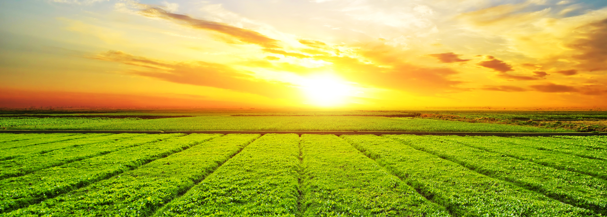

TUDO O QUE VOCÊ PRECISA SABER SOBRE A AGRICULTURA 4.0
Agricultura 4.0 é uma abordagem inovadora que combina tecnologias avançadas, como IoT,
inteligência artificial e automação, para otimizar a produção agrícola, aumentar a eficiência,
reduzir custos e promover práticas mais sustentáveis.
A agricultura é confrontada por uma série de problemas complexos que precisam ser enfrentados. Um dos principais desafios é a segurança alimentar, pois é necessário produzir uma quantidade suficiente de alimentos para atender à crescente demanda da população mundial. Além disso, as mudanças climáticas representam uma ameaça significativa, com eventos climáticos extremos se tornando mais frequentes e prejudicando as colheitas.
A escassez de água é outro problema crucial, uma vez que a agricultura é uma das principais usuárias desse recurso vital. A gestão eficiente da água se torna essencial para garantir a sustentabilidade dos sistemas agrícolas. Além disso, o uso intensivo de recursos naturais, como solo e nutrientes, pode levar ao seu esgotamento, exigindo práticas sustentáveis de manejo.
O uso indiscriminado de agroquímicos, como pesticidas e fertilizantes químicos, também representa um desafio. Esses produtos podem ter impactos negativos no meio ambiente, na saúde humana e na biodiversidade, sendo necessário adotar abordagens mais sustentáveis, como o manejo integrado de pragas e o uso de fertilizantes orgânicos.
A perda de biodiversidade é uma preocupação crescente, uma vez que a expansão agrícola resulta na destruição de habitats naturais e na diminuição da diversidade biológica. Preservar a biodiversidade é fundamental para garantir a saúde dos ecossistemas agrícolas e a resiliência dos sistemas alimentares.
Por fim, a desigualdade no acesso a recursos agrícolas, como terra, financiamento e tecnologia, é um problema persistente. Muitos pequenos agricultores, especialmente em países em desenvolvimento, enfrentam dificuldades para melhorar sua produtividade e qualidade de vida devido a essas barreiras.
Enfrentar esses problemas requer abordagens inovadoras, sustentáveis e inclusivas na agricultura. Isso envolve o desenvolvimento e a adoção de práticas agrícolas mais eficientes e amigáveis ao meio ambiente, o investimento em tecnologias agrícolas avançadas e o fortalecimento das capacidades dos agricultores. Além disso, é necessário promover políticas e parcerias globais que apoiem uma agricultura equitativa e sustentável, contribuindo assim para o desenvolvimento de sistemas alimentares mais resilientes e seguros.
ESTATÍSTICAS SOBRE A PRODUÇÃO NACIONAL
O desperdício de alimentos é uma questão complexa e estimar com precisão a quantidade exata de alimentos perdidos no Brasil anualmente pode ser desafiador. No entanto, dados disponíveis sugerem que o desperdício de alimentos no país é significativo.
Segundo o Instituto Brasileiro de Geografia e Estatística (IBGE), em seu estudo mais recente sobre o tema, realizado em 2018, o Brasil perdeu certa de 26,3 milhões de toneladas de alimentos ao longo daquele ano. Esse valor representa aproximadamente 13% de toda a produção do país.
Essas perdas ocorrem em diferentes estágios da cadeia de produção e abastecimento, desde a colheita até o consumo final. os principais motivos para o desperdício de alimentos incluem problemas na colheita, armazenamento inadequado, transporte ineficiente, falta de infraestrutura adequada e manuseio inadequado nos pontos de vendas e no consumo doméstico.
VOCÊ SABE QUAIS SÃO AS ETAPAS PARA UM PRODUTO CHEGAR ATÉ A SUA MESA?
Pós-colheita e processamento:
Alguns produtos agrícolas podem requerer processamento adicional antes de serem enviados aos consumidores. Isso pode envolver limpeza, classificação, embalagem e outros processos específicos para cada tipo de produto.
Transporte da fazenda:
Os produtos agrícolas são transportados da fazenda para um centro de distribuição ou armazém. O tempo necessário para essa etapa depende da distância entre a fazenda e o local de distribuição, bem como do meio de transporte utilizado.
Distribuição regional:
Após chegar ao centro de distribuição, os produtos agrícolas são geralmente enviados para locais de distribuição regionais. Isso pode envolver o uso de caminhões ou outros meios de transporte, dependendo da escala e da localização geográfica da distribuição.
Armazenamento e logística de varejo:
Os produtos agrícolas podem ser armazenados em centros de distribuição regional ou diretamente em estabelecimentos varejistas, como supermercados. Essa etapa envolve a logística de armazenamento, controle de estoque e preparação para a venda.
Venda ao consumidor:
Finalmente, os produtos agrícolas são colocados à venda nos pontos de venda, onde os consumidores podem comprá-los. Essa etapa envolve a exposição adequada dos produtos, precificação e venda direta ao consumidor.
OS PRINCIPAIS PROBLEMAS DA AGRICULTURA BRASILEIRA
Clima:
O clima desempenha um papel fundamental na agricultura, e eventos climáticos extremos, como secas, enchentes, geadas ou ondas de calor, podem causar danos significativos às colheitas. O Brasil é um país com dimensões continentais e possui diferentes regiões climáticas, o que significa que diferentes culturas podem ser afetadas por diferentes problemas climáticos em várias partes do país.
Pragas e Doenças:
Pragas de insetos, fungos, bactérias e vírus podem causar danos significativos às plantações, reduzindo a produtividade das colheitas. A falta de manejo adequado e o uso excessivo ou inadequado de pesticidas podem contribuir para o surgimento e disseminação de pragas e doenças.
Manejo inadequado do solo:
Práticas inadequadas de manejo do solo, como a falta de rotação de culturas, o uso excessivo de fertilizantes ou o manejo inadequado de resíduos vegetais, podem levar à degradação do solo, perda de nutrientes e redução da produtividade das colheitas.
Falta de infraestrutura e tecnologia:
A falta de infraestrutura adequada, como sistemas de irrigação, armazenamento e transporte, pode afetar a produção e o transporte das colheitas. Além disso, a falta de acesso a tecnologias modernas, como maquinário agrícola avançado e técnicas de monitoramento de cultivos, também pode limitar a eficiência e a produtividade das colheitas.
Falta de capacitação:
Muitos agricultores enfrentam desafios devido à falta de acesso a assistência técnica e capacitação adequadas. A falta de conhecimento sobre boas práticas agrícolas, gestão de culturas, técnicas de manejo e adoção de tecnologias pode limitar a capacidade dos agricultores de enfrentar os desafios e obter melhores resultados em suas colheitas.
PROBLEMAS LOGÍSTICOS E DE DISTRIBUIÇÃO
Infraestrutura de transporte:
O Brasil enfrenta desafios em sua infraestrutura de transporte, especialmente em relação às estradas e ferrovias. Muitas áreas rurais têm acesso limitado a estradas pavimentadas e ferrovias, o que pode dificultar o transporte eficiente e rápido dos produtos agrícolas para os centros de distribuição e mercados consumidores.
Distâncias geográficas:
Devido ao tamanho do país, algumas regiões produtoras de alimentos estão localizadas a grandes distâncias dos principais centros consumidores. O transporte desses produtos por longas distâncias aumenta o tempo de trânsito, os custos e os desafios logísticos, especialmente quando se trata de produtos perecíveis que requerem refrigeração.
Falta de armazenamento adequado:
A falta de infraestrutura de armazenamento adequada ao longo da cadeia de distribuição é um desafio. A falta de armazéns refrigerados e instalações de armazenamento adequadas pode levar a perdas de qualidade e vida útil dos produtos, além de dificultar a manutenção dos produtos em condições adequadas antes de chegarem aos consumidores.
Problemas de embalagem e manuseio:
A embalagem e o manuseio adequados são essenciais para preservar a qualidade e evitar danos aos produtos durante o transporte. No entanto, a falta de padronização e práticas inadequadas de embalagem e manuseio podem resultar em perdas e danos aos produtos durante a distribuição.
Logística de distribuição complexa:
O sistema de distribuição no Brasil pode ser complexo, com múltiplos intermediários e uma cadeia de suprimentos fragmentada. Isso pode aumentar os custos e a complexidade do transporte e da distribuição, além de adicionar tempo ao processo de entrega dos produtos agrícolas aos consumidores.
"A agricultura sustentável é de extrema importância para garantir a segurança alimentar a longo prazo, ao mesmo tempo em que preserva os recursos naturais e o meio ambiente. Ela busca maximizar a produtividade agrícola de forma ecologicamente equilibrada, promovendo a conservação do solo, da água e da biodiversidade. Além disso, a agricultura sustentável contribui para a mitigação das mudanças climáticas, ao adotar práticas que reduzem as emissões de gases de efeito estufa e aumentam a capacidade de sequestro de carbono no solo."
